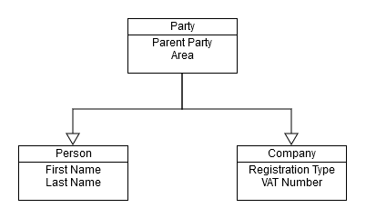
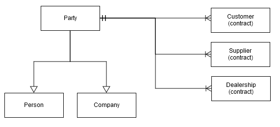

Parties concepts
Parties are one of the most widely used definitions in ERP.net. They usually participate in business relations or transactions.
Examples include:
- Business customers
- Consumer customers
- Employees in our or external companies
- Contacts
- Dealers
- Company locations
- Departments
Basic party types
Parties don't exist on their own - they're always created as separate objects, like person or company.
In object terms, it means that 'Person' and 'Company' inherit 'Party'. 'Party' is considered of type 'Person' or 'Company'.
Note
Parties can't be created directly. They're always instantiated as some sub-type, like 'Person' or 'Company'.
This diagram shows the relationship between party, person and company:

Party attributes inheritance
All attributes of 'Party' are also attributes of 'Person' and 'Company'.
For example, if a party has an Area attribute, all 'Person' and 'Company' objects would also have it.
The opposite isn't true. 'Person' and 'Company' objects have attributes which are specific only to them.

In this diagram, 'Party' has Parent Party and Area attributes, inherited by 'Company' and 'Person'.
'First name' and 'Last name' are specific only to 'Person'. Neither companies nor parties have them.
Relationships with other entity types
Although parties don't exist on their own, they can participate in relationships.
For example, customer and supplier contracts are objects that can coexist with a party. As a result of the relationship, a both would relate to either a person or a company. This is shown on the following diagram:

Note
In ERP.net, Customer (contract), Supplier (contract) and Dealership (contract) = Customer, Supplier and Dealer.
Note
The diagram shows how one 'Party' object can be in relationships with many 'Customer contract' objects. The current implementation of ERP.net allows multiple customer contracts per party, but only one for each enterprise company. In other words, a party can only have a single customer contract with any given enterprise company.
Let's suppose you have:
- A customer (company), called "ABC"
- A supplier (person), named "John"
This will be represented by the following objects:
- Party (ABC)
- Company (ABC), which inherits Party (ABC)
- Customer (ABC), which points to Party (ABC)
- Party (John)
- Person (John), which inherits from Party (John)
- Supplier (John), which points to Party (John)
If you query the system with something like "Show me ALL parties", the result will be:
- Party (ABC)
- Party (John)
If you query with "Show me ALL customers", the result will be:
- Customer (ABC)
Party hierachy
There are other party types in addition to the main ones. Among them are 'Department' and 'Division'.
By using all types, data about parties can be neatly organized. A useful example is the ability to structure parties hierarchically. Having departments and divisions as parties allows for flexible representation of different corporate hierarchies.
For example, let's have 'Corporation A' structured in the following way:
- Corporation A
- Division 1
- Sales Department
- Marketing Department
- Division 2
- Sales Department
- Marketing Department
- Global Marketing Department
- Global Accounting Department
- Division 1
The flexible party hierarchy also allows structuring different companies within a corporation:
- Corporation B
- Company A
- Consumer Electronics Division
- Sales Department
- Business Consulting Division
- Sales Department
- Accounting Department
- Consumer Electronics Division
- Company B
- Sales Department
- Accounting Department
- Corporate Financials Department
- Company A
Note
Because our own enterprise companies Multi-company are also parties, such hierarchy can be used for organizing our own corporate structure and the corporate structure of our business partners.
Party relationships
Relationships between different parties can be formal or informal.
Using them allows for the easy representation of information:
- Peter works for Company A
- Peter is a friend of George
- Steven has been married to Susan since 8/3/2011
- John worked for Company B from 1/1/2010 till 3/5/2015
This information, on the other hand, is represented by a table:
| From Party | Relationship Type | To Party | From Date | To Date | Notes |
|---|---|---|---|---|---|
| Peter | works for | Company A | |||
| Peter | is friend with | George | |||
| Steven | is husband of | Susan | 8/3/2011 | ||
| John | works for | Company B | 1/1/2010 | 3/5/2015 |
From Date and To Date represent the dates when the relationship was established and terminated, respectively.